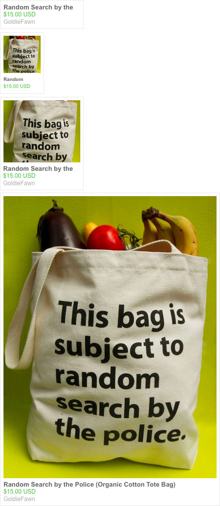

EtsyStar
First of all, you should be aware of Etsy Mini which is an official Etsy tool and will satisfy the majority of anyones needs. It is located here and it also allows you to embed Favorite feeds in your own web pages.
This little tool that I call EtsyStar is different in a couple of little ways:
- In addition to the small and wide thumbnail views, you can also use the large photo
- Display the Favorites from more than one user in one go
- Uses standard Etsy styles which you can tweak and modify yourself
How does it work?
It uses the Prototype JS library. Time permitting I'll update it not to use this. For now its needed.
All the javascript and CSS is contained in two individual files:
All you need to do is copy and paste the following between the <HEAD> tags of your page:
<link type="text/css" rel="stylesheet" href="etsyStar.css" />
<script type="text/javascript" src="http://ajax.googleapis.com/ajax/libs/prototype/1.6.0.2/prototype.js"></script>
<script type="text/javascript" src="etsyStar.js"></script>
Copy and Paste this within the BODY tags, wherever you want it positioned:
<div id="etsyStar"></div>
When the page loads the markup for the Favorites is inserted into that spot.
Configure
Setup is quick and easy... just update this part of the Javascript:
this.Users = ['donohoe', 'klittle212']; // Etsy usernames go here... no limit but be reasonable
this.Limit = '3'; // This is limit for user, with 0 = all results returned
this.ImageType = 'wide'; // thumbnail, wide, large, none (empty quotes == none)
this.Target = 'etsyStar'; // The ID of the DIV in which the list will live
That should be self-explanatory - Users refers to Etsy usernames and the possible values for ImageType are: wide, thumbnail, wide, large or none
Demo
This demo uses 2 usernames, with the limit set to 3 (so 2 usernames * 3 = 6 items listed) with the view set to 'wide'.
List Styles
The following image shows how an item will look based on these values for ImageType: none, thumbnail, wide, large
Thanks
This relies completely on Yahoo's YQL to grab the RSS feeds from etsy.com and give it back to me as sweet wonderful JSON. If you use this, then your hopes and dreams and now intertwined with that of Yahoo!